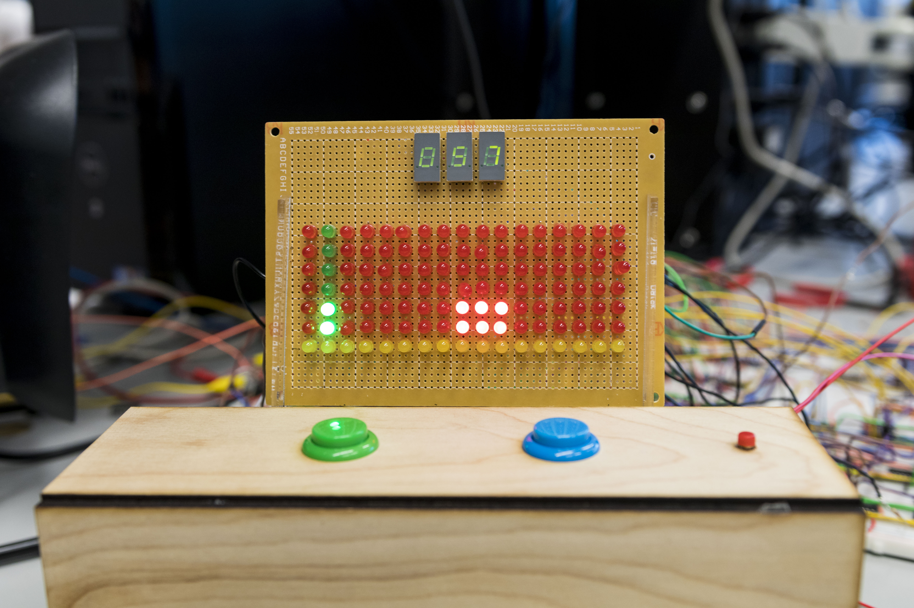
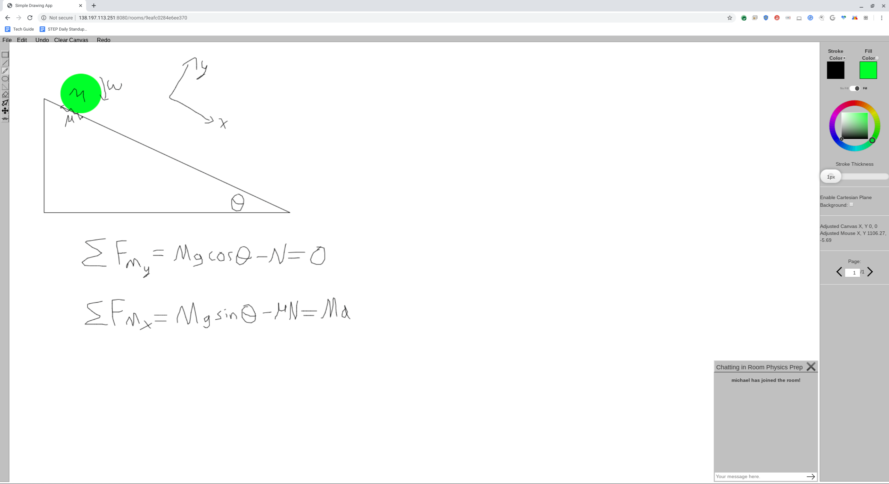

Michael's Portfolio
Hi! I'm Michael Valverde, a rising sophomore at the California Institute of Technology. I hope to one day be a professional graphics programmer in the VR space. On this page you can read a little bit about myself, as well as some interesting projects I've worked on in the past.
Background - About Me
I was born and raised in Bayonne, New Jersey on December 6th, 2000. For as long as I can remember, I have always loved games of all sorts- board games, puzzle games, word games, and yes- video games. This love of games, especially video games, is what ultimately drove me to want to become a computer scientist- I want to enable others to experience the same magic I did when I first discovered video games. This is why I am especially interested in Virtual Reality (VR), which I view as the frontier of game development, with limitless possibilities for immersion and wonder just waiting to be invented.
 I also have an amazing dog named Biscuit who joined my family in 2008. He is definitely part yorkie-terrier, but his (relatively) large size leads us
to believe that he is a mix with another dog breed, although we are unsure as to what this mystery breed might be. Although he likes to act tough, he
is quite the coward and will run at the first sign of trouble. Here's a picture of him sleeping.
I also have an amazing dog named Biscuit who joined my family in 2008. He is definitely part yorkie-terrier, but his (relatively) large size leads us
to believe that he is a mix with another dog breed, although we are unsure as to what this mystery breed might be. Although he likes to act tough, he
is quite the coward and will run at the first sign of trouble. Here's a picture of him sleeping.
Previous Projects
I've worked on what I like to think are some pretty cool projects over the past few years. Here are some of the highlights. Click on a project to learn more about it. For a full list of projects, be sure to check out my Github.
DLD Dino Game 
In this project, I teamed with two others to make a hardware based version (using only logic gates, multiplexors, 555 timers, and a healthy amount of shift registers) of the google chrome dinosaur game (chrome://dino on a chrome browser).
Collaborative Drawing App 
In this project I made a room-based collaborative online whiteboard for me and my friends to use. Anyone could connect to the site and then either create a new room and invite their friends to it or join an existing room. The rooms are fully-persistent and can be either public or password-protected. The backend for this site was done in the Python framework Flask.
Trivia
Click here to learn a random fact about me: